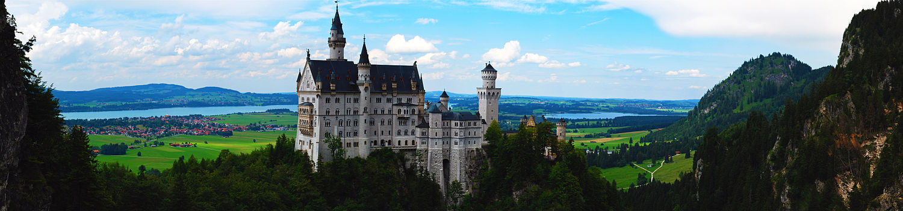

Замок Нойшванштайн (нім. Schloss Neuschwanstein, МФА: [nɔy’ʃvanʃtain] — «Нова лебедина скеля») — замок XIX століття, що знаходиться поблизу містечка Фюссен та замку Гоеншванґау в південно-західній Баварії, недалеко від австрійського кордону. Палац є колишньою резиденцією останнього короля Баварії Людвіга II, і був побудований на його замовлення на знак пошани до Ріхарда Вагнера. Замок повинен був стати особистим притулком короля, але був відкритий для публіки невдовзі після смерті Людвіга у 1886 році. З того часу його відвідало більше ніж 61 мільйон осіб зі всього світу.
За різними оцінками Нойшванштайн є «найгарнішим» із замків і палаців Німеччини. Щороку замок відвідує понад 1,3 млн відвідувачів, а в літній час кількість туристів складає майже 6 000 за добу. Палац посів чільне місце в кількох фільмах і був джерелом натхнення при будівництві замку Сплячої красуні[en] в Діснейленді.
Замок має добру збірку картин, що зображують сцени з різних опер Ріхарда Вагнера. Однак деякі кімнати не були оформлені і тільки 14 кімнат було завершено перед смертю Людвіга. Повністю відкритий для туристів замок був тільки за 4 роки після того, як були добудовані деякі зовнішні частини.
В інтер'єрах замку головну роль відіграють ілюстрації до опер Вагнера та старовинних німецьких легенд. Лебединий мотив — те, чим пронизана вся архітектура та художнє оформлення замку. Лебідь — геральдичний птах старовинного роду Швангау — наступником цього роду вважав себе батько Людвіга, Максиміліан II Баварський.
Культурні алюзії